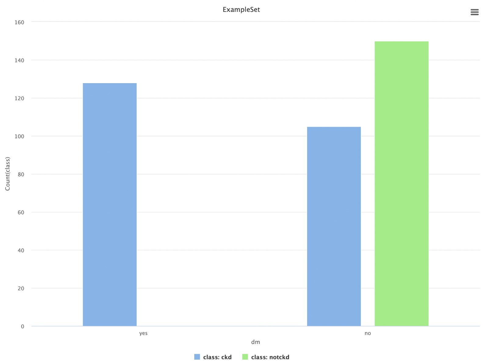

Caso de Estudio: Chronic Kidney Disease
Análisis del problema planteado
Actualmente, hay muchas personas en el mundo que padecen enfermedades renales. Debido a varios factores de riesgo como la alimentación, el medio ambiente y el nivel de vida, muchas personas contraen enfermedades repentinamente sin comprender su condición. El diagnóstico de enfermedades renales crónicas es generalmente invasivo, costoso, lento y a menudo riesgoso. Es por eso que muchos pacientes llegan a etapas tardías sin tratamiento, especialmente en aquellos países donde los recursos son limitados. Por lo tanto, la estrategia de detección temprana de la enfermedad sigue siendo importante, particularmente en los países en desarrollo, donde las enfermedades generalmente se diagnostican en etapas tardías.
El objetivo del problema, haciendo uso del dataset https://archive.ics.uci.edu/dataset/336/chronic+kidney+disease de la UCI, es predecir la presencia de una enfermedad renal crónica, a partir de diversos datos obtenidos en un hospital, a traves de análisis de sangre, orina, entre otros.
Atributos
A continuación se presentan los atributos pertenecientes al dataset, que seran usados para las predicciones.
-
Age (edad)
- Numerico
- Representa la edad en años del sujeto.
-
Blood Pressure (presion arterial)
- Numerico
- Representa la presion arterial del sujeto en mm/Hg.
-
Specific Gravity
- Nominal (1.005, 1.010, 1.015, 1.020, 1.025)
- Mide la capacidad de los riñones para equilibrar el contenido de agua y excretar desechos.
-
Albumin (albúmina)
- Nominal (0, 1, 2, 3, 4, 5)
- Es una proteína producida por el hígado
- Una cantidad de albúmina alta en sangre podría indicar deshidratación o diarrea grave.
-
Sugar (azúcar)
- Nominal (0, 1, 2, 3, 4, 5)
- Es el azúcar principal que se encuentra en la sangre
-
Red Blood Cells (glóbulos rojos)
- Nominal (normal, abnormal)
- Su función es transportar el oxígeno hacia los diferentes tipos de tejidos del cuerpo.
-
Pus Cells (celulas de pus)
- Nominal (normal, abnormal)
- Las células de pus en la orina son un indicio de infección del tracto urinario y, en casos graves, pueden indicar sepsis o cualquier otra afección de salud.
-
Pus Cell clumps
- Nominal (present, notpresent)
- Es significativo (present) si hay más de 4 células de pus/HPF en una muestra de orina centrifugada.
-
Bacteria
- Nominal (present, notpresent)
- Presencia de bacterias en la orina. En general indicativo de infeccion urinaria.
-
Blood Glucose Random (glucosa en sangre al azar)
- Numerico
- Mide el nivel de azúcar en la sangre en el momento de realizar la prueba, sin ayuno, en mgs/dl. Un valor de 200 mg/dL o mas indica diabetes.
-
Blood Urea (urea en sangre)
- Numerico
- Indica la cantidad de urea, en mgs/dl, en sangre
- Una alta cantdiad implica un mal funcionamiento de los riñones, ya que no son capaces de filtrarla.
-
Serum Creatinine
- Numerico
- Indica la cantidad de creatinina, en mgs/dl, en sangre.
-
Sodium (sodio)
- Numerico
- Indica la cantidad de sodio, en mEq/L
- Los resultados de niveles de sodio más altos de lo normal, pueden ser un signo de alguna afección renal.
-
Potassium (potasio)
- Numerico
- Indica la cantidad de potasio, en mEq/L
- Niveles de potasio altos pueden causar irregularidades en el latido del corazón, y en los casos más graves un ataque cardiaco.
-
Hemoglobin (hemoglobina)
- Numerico
- Es una proteína del interior de los glóbulos rojos que transporta oxígeno desde los pulmones a los tejidos y órganos del cuerpo.
- Indica la cantidad de hemoglobina en sangre, en gms.
-
Packed Cell Volume // TODO
Identificación del tipo de problema
Dado que el atributo a predecir es una variable categorica (la presencia o no de enfermedad renal crónica), se trata de un problema de clasificacion supervisado.
Análisis del dataset y preparación de los datos
Analisis del dataset
El dataset cuenta con 400 registros y no se cuenta con dataset de testing. Se importa el dataset en RapidMiner respetando los tipos indicados en la web de UCI y marcando el atributo class como label e id como id.
Reemplazo de valores (manejo de datos faltantes e inconsistentes)
Los datos faltantes (missing values) son datos que no existen en el dataset. Dependiendo del contexto es posible que sea valido dejarlo como está o reemplazarlo con algún valor. No siempre es un problema.
En este caso, contamos con varios atributos con valores faltantes. Dado que el dataset cuenta con 400 registros, no podemos permitirnos eliminar cerca de 1/3 solo para solucionar los valores faltantes del primer att. Teniendo esto en cuenta, lo mejor será imputar el valor promedio (o moda para los de tipo categorico).
Los datos inconsistentes ocurren cuando el valor existe (no es un missing) pero no es válido o significativo.
Echando otro vistazo, se puede observar que hay varias variables categoricas que cuentan con el valor "?", que seguramente quiso representar que es un dato faltante y RapidMiner lo interpretó como un valor valido. Con los numericos no ocurre esto ya que al momento de importar el dataset y setear los tipos de cada columna, si existia algun "?" (que no es un valor numerico valido) fue automáticamente transformado a un valor missing.
Por lo tanto, antes de reemplazar los valores faltantes, debemos reemplazar todos los "?" presentes por valores vacios.
Además, podemos observar que los siguientes atributos cuentan con valores invalidos, no contemplados en la especificación:
Para todos ellos, debemos interpretar cual pudo haber sido la intencion de quien ingreso los datos e imputar el valor correcto
Creamos un subproceso llamado "Replace values" y allí ingresamos todos los operadores necesarios para resolver los problemas planteados en esta parte.
Outliers
Una vez solucionados los valores faltantes e inconsistentes, es hora de prestar atencion a los outliers:
Luego de un poco de investigacion, un nivel de presion sanguínea de 180 es sumamente peligrosa pero posible, por lo que este outlier no debe ser modificado.
Un nivel de urea en sangre por encima de lo normal (superior a 40 mg/dL) puede indicar problemas en los riñones, deshidratación, sangrado gastrointestinal, insuficiencia cardíaca, infecciones graves u otras condiciones médicas serias. Por lo tanto, valores superiores a 300 (3 presentes en el dataset) deberian ser eliminados por ser considerados invalidos
Los niveles normales de sodio en sangre estan alrededor de 135 a 145 mEq/L. Un valor de 5 mEq/L es inválido, por lo que debe ser eliminado.
El rango normal de creatinina para adultos se encuentra entre 0.5 y 1.2 mg/dL. Eliminaremos aquellos valores que esten por encima de 20 ya que no son considerados validos.
Los niveles normales de potasio en sangre estan alrededor de 3.5 a 5.0 mEq/L. Eliminaremos aquellos valires por encima de 15 por ser considerados invalidos.
Crearemos un subproceso llamado "Outliers" para realizar los filtros que se mencionan en esta seccion.
Una vez eliminados los outliers, quedamos con 383 registros restantes para entrenamiento y testing.
¿Cómo cambia la probabilidad de desarrollar CKD en relación con diabetes, hipertensión o edad?

Tanto la presencia de diabetes como de hipertensión parecen estar estrechamente relacionadas con la posibilidad de desarrollar una enfermedad renal crónica.
Al analizar la edad, es claro que afecta en mayor cantidad a personas adultas mayores a 45 años.
Modelado
Dado que se trata de un problema de clasificacion, se proponen 3 modelos: - Naive Bayes - k-NN - Logistic Regression
Como se cuenta con un unico dataset para entrenamiento y pruebas con relativamente pocos registros, se utilizara un Cross Validation (con configuración default) para sacar el mayor provecho posible de ellos.
Naive Bayes
k-NN
Logistic Regression
Vemos que Naiva Bayes es el modelo que mejor se comporta en este escenario. Tambien se puede observar utilizando la curva ROC
Por lo que nos quedaremos con el modelo de Naive Bayes
Y el proceso finalizado es el siguiente